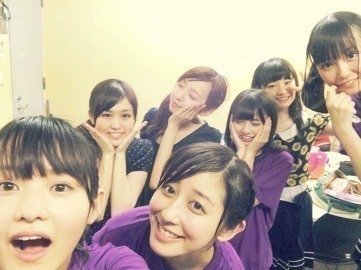
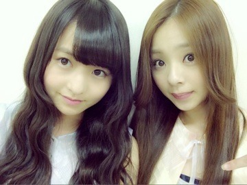

| 2014/07 01 Tue | 生姜と唐辛子と素敵 なものをいっぱい。 581回目 |
28日29日4公演
アンダーライブ
in六本木ブルーシアター
来てくださったみなさん
ありがとうございました！
なんと初日の昼公演で
喉が潰れるという最悪な事態に。
自覚の足りない今の自分です。
まったく、本当に情けない。
リハでも本番直前までも
散々メンバーに迷惑かけていたのに、
こんなことになってしまい、
本当に悔しいです。
ご心配おかけしてしまい、
すみません。
絶賛治療中です。
セットリストはまだ公開できませんが
名物のユニット曲は
やさしさとは
でこぴん
を歌いました！
もう帰ってきた！
プリンシパルコント傑作選では
2日目の昼に「銀行強盗」を
らりん、純奈、きいちゃん、琴子
と披露しました！
私は強盗役で自由に
やらせてもらって楽しかった。
観に来た方、どうだったかなあ

連続4公演で
見えたものがたくさんある。
まだまだ続くライブ。
一公演一公演大切に！
後半もみんなでがんばります！

ここにいる理由MV
公開されました。
みんな朝食を食べる斬新なMVです。
夜中見たらだめだ！！
前回に引き続きセンターを務めます。
アンダーライブでも披露しましたが、
とってもカッコ良いです！
今までとは違った雰囲気で
ライブで歌うときも、ぴりっと
締まるのではないかなと思います。
そして、もうひとつ
今日のおに魂で解禁された
カップリング曲
僕が行かなきゃ誰が行くんだ？
他の星からメンバーが再集結です。
嬉しい、ありがたい
歌詞の世界観が
他の星からと似ていてすごく好き！
哲学的で、メロディーも素敵！
......
れなりんが乃木坂46を卒業します。
同い年！
すごく真面目で礼儀正しくて清楚で
天然おちゃめに私と絡んでくれる
れなりんです。

バイシクルMV撮影のとき！
ばんざいしてるりんちゃん
懐かしい。
ずっと応援してます。
残りの活動、一緒にがんばろうっ
まりか
コメント(434)
2014/07/01 09:12